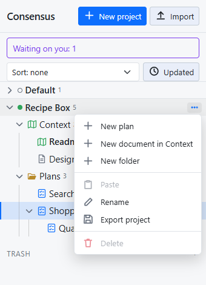
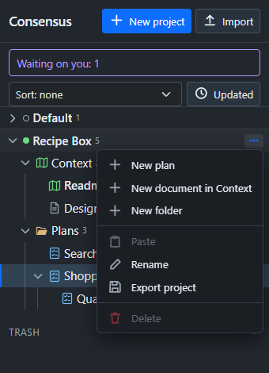

Consensus-AI
Consensus-AIExport and import
A project travels as one JSON file: its Context folder and documents, folders, plans, Subplans, threads and every revision, with no tokens. That is how a project moves between servers, and how it is backed up on its own.
Export
Export project in a project's menu downloads the file. The same comes from the API at GET /api/projects/<id>/export.


Import
Import at the top of the sidebar asks for an exported file. What happens depends on whether the project is already here:
- A project not here comes in as it is, every id intact.
- A project already here is imported as a copy ("Copy of
(imported )", every id new) or merged: revisions are matched by id, a conflict gets a merge revision with the newer text, and nothing here is removed. Import asks which.
The same goes through POST /api/projects/import with the export as the body.
Older exports
An export from an older Consensus is read too: its corpora and workers are dropped, its context becomes the Readme, and the Context folder is made.